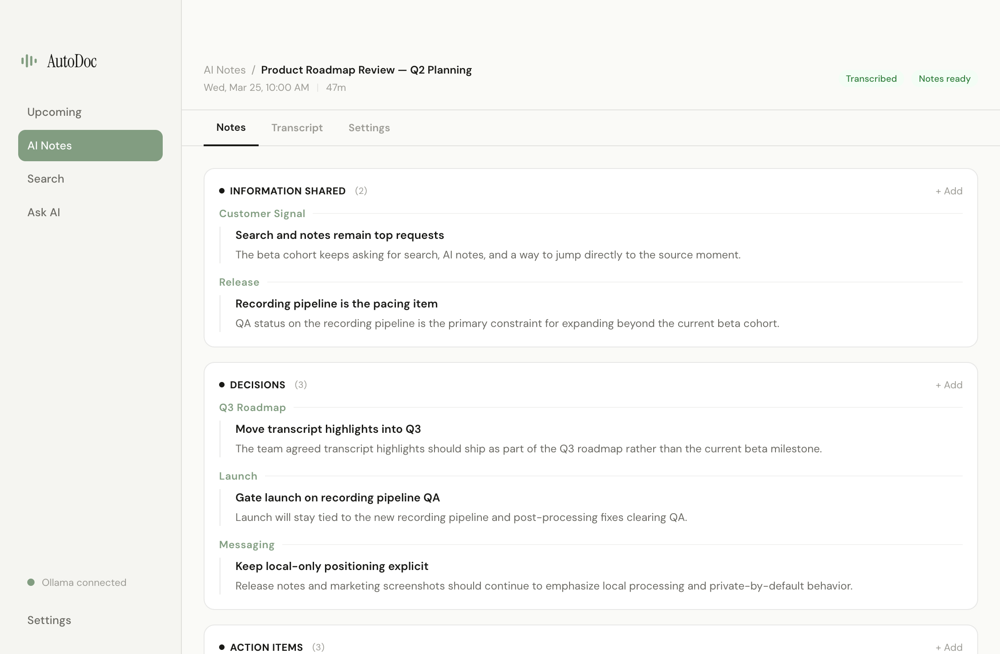
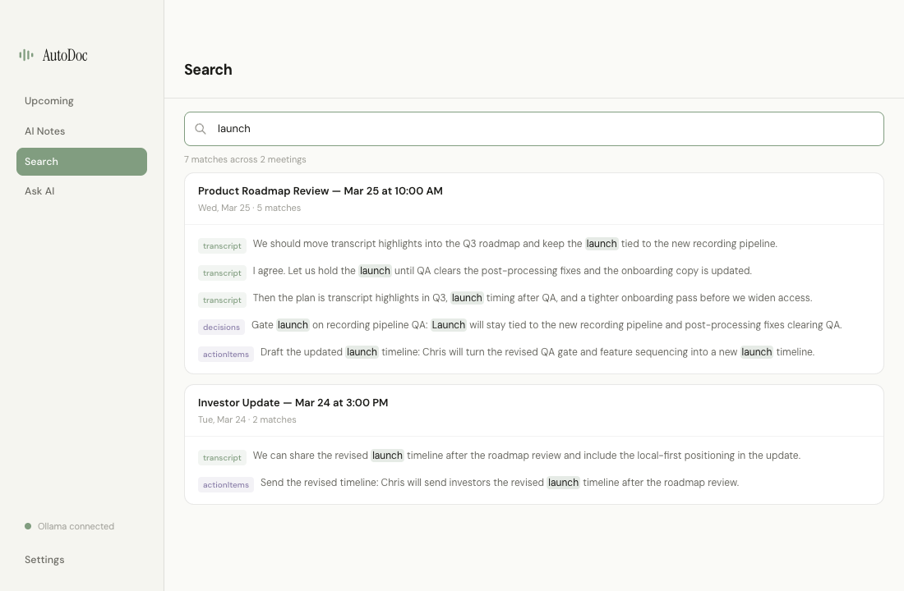
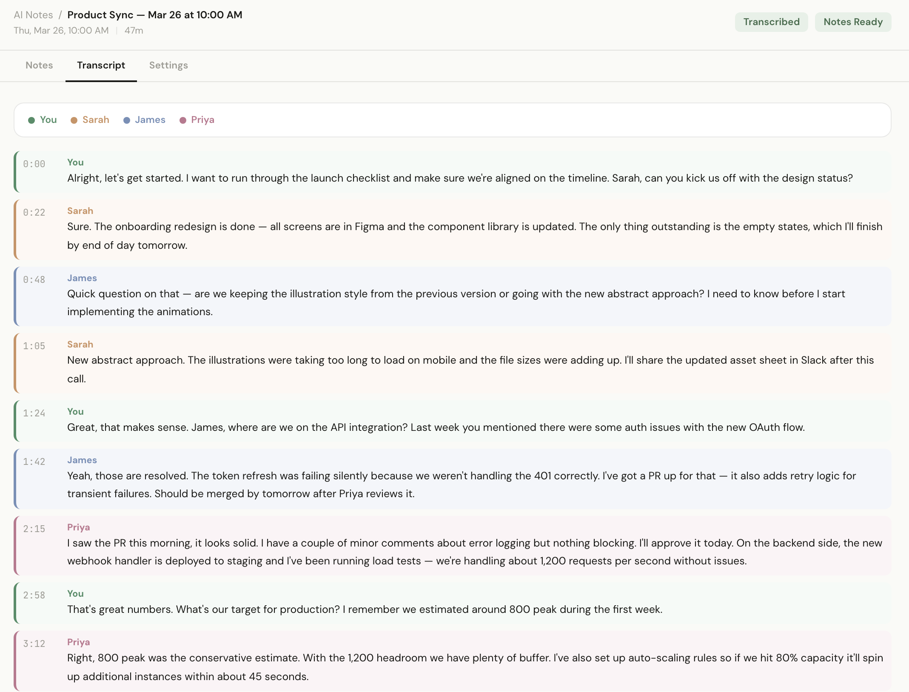

AutoDoc records, transcribes, and summarizes your meetings — without sending a single byte to the cloud. Built by ex-Apple engineers.

Every meeting distilled into what actually matters — decisions made, action items assigned, metrics discussed, and topics covered. Based on Andy Grove's High Output Management framework.

'What did we decide about the Q3 roadmap?' Search across every meeting you've ever had, or just ask a question in plain English.
Video, audio, and transcript — synced and searchable. Scrub to any moment. Edit anything after the fact. Your meetings become a living reference you can always go back to.

No accounts. No servers. No telemetry. Everything runs on your computer, stays on your computer. That's it.
We've spent a decade building tools people trust with their most important work. AutoDoc is our answer to meeting tools that treat your conversations as their data.
Learn more about us →Free, open source, and private by default.